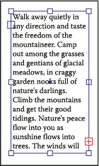
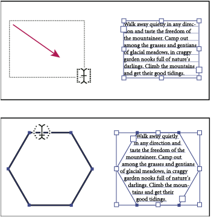

Entering text
You can create type by using one of three methods: at a point, inside an area, and along a path.
-
Point type is a horizontal or vertical line of text that begins where you click and expands as you enter characters. Each line of text is independent—the line expands or shrinks as you edit it, but doesn’t wrap to the next line. Entering text this way is useful for adding a few words to your artwork.
-
Area type (also called paragraph type) uses the boundaries of an object to control the flow of characters, either horizontally or vertically. When the text reaches a boundary, it automatically wraps to fit inside the defined area. Entering text this way is useful when you want to create one or more paragraphs, such as for a brochure.
-
Type on a path flows along the edge of an open or a closed path. When you enter text horizontally, the characters are parallel to the baseline. When you enter text vertically, the characters that are perpendicular to the baseline. In either case, the text flows in the direction in which points were added to the path.
If you enter more text than can fit within an area or along a path, a small box containing a plus symbol (+) appears near the bottom of the bounding area.

Example of overflow text
You can resize the text area or extend the path in order to display the overflow text. You can also thread the text into another object.
For a video on creating point and area type, see www.adobe.com/go/vid0045. For a video on creating type on a path, see www.adobe.com/go/vid0046. For more information about working with type in Illustrator, see the Working with Type white paper at www.adobe.com/go/learn_ai_type.
 Enter text at a point
Enter text at a point
-
Select the Type tool
 or
the Vertical Type tool .
or
the Vertical Type tool .
The pointer changes to an I‑beam within a dotted box. The small horizontal line near the bottom of the I‑beam marks the position of the baseline, on which the text rests.
- When you finish entering text, click the Selection tool
 to
select the type object. Alternatively, Ctrl‑click (Windows) or Command-click
(Mac OS) the text.
to
select the type object. Alternatively, Ctrl‑click (Windows) or Command-click
(Mac OS) the text.
Enter text in an area
-
Define
the bounding area:
-
Select the Type tool
or
the Vertical Type tool , and
drag diagonally to define a rectangular bounding area. -
Draw the object you want to use as the bounding area. (It doesn’t matter if the object has stroke or fill attributes, because Illustrator automatically removes them.) Then select the Type tool
, the
Vertical Type tool , the
Area Type tool , or
the Vertical Area Type tool and
click anywhere on the object’s path. 
Creating a type area by dragging (top) compared to converting an existing shape to a type area (bottom)
Note: If the object is an open path, you must use the Area Type tool to define the bounding area. Illustrator draws an imaginary line between the endpoints of the path to define the boundaries.
-
- (Optional) Set text-formatting options in the Control panel, Character panel, or Paragraph panel.
- Enter the text. Press Enter or Return to begin a new paragraph.
- When you finish entering text, click the Selection tool to
select the type object. Alternatively, Ctrl‑click (Windows) or Command-click
(Mac OS) the text.
Enter text along a path
-
Do one of the following:
-
To create horizontal text along a path, select the Type tool
or
the Type On A Path tool . -
To create vertical text along a path, select the Vertical type tool or the Vertical Type On A Path tool .
-
- When you finish entering text, click the Selection tool to
select the type object. Alternatively, Ctrl‑click (Windows) or Command-click
(Mac OS) the text.